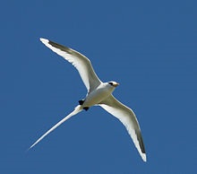
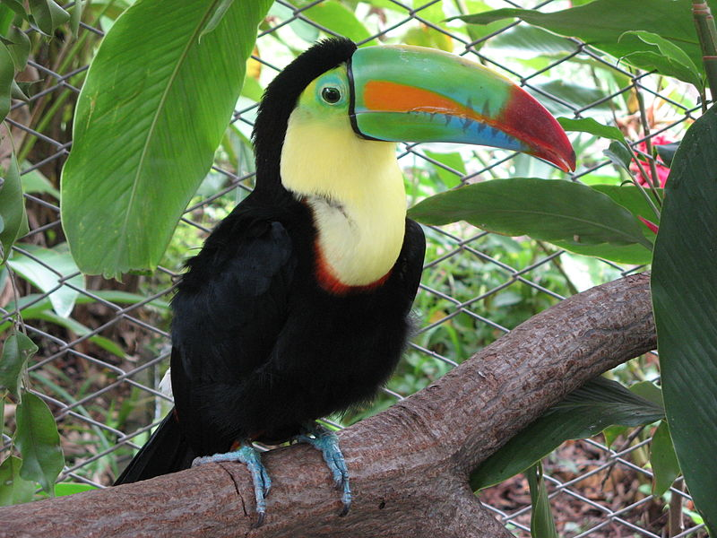
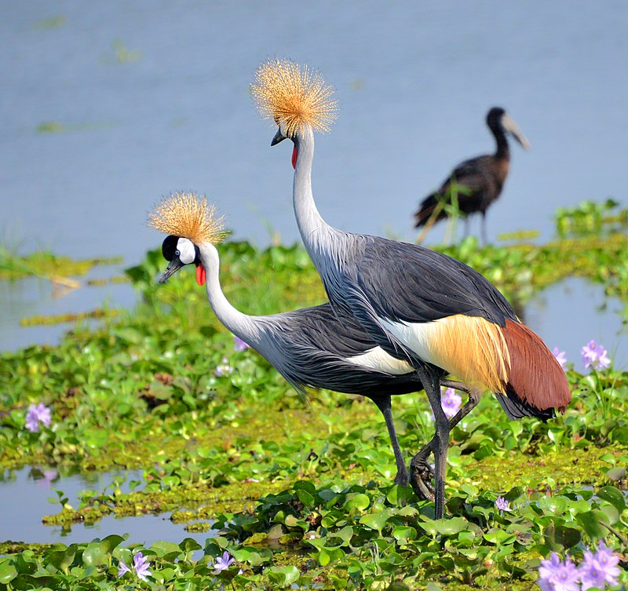

Birds (Aves) are a group of endothermic vertebrates, characterised by feathers, toothless beaked jaws, the laying of hard-shelled eggs, a high metabolic rate, a four-chambered heart and a strong yet lightweight skeletonBirds have wings which are more or less developed depending on the species; the only known groups without wings are the extinct moa and elephant birds.Many species of birds are economically important as food for human consumption and raw material in manufacturing, with domesticated and undomesticated birds (poultry and game) being important sources of eggs, meat, and feathers. Songbirds, parrots, and other species are popular as pets. Guano (bird excrement) is harvested for use as a fertiliser. Birds prominently figure throughout human culture. About 120–130 species have become extinct due to human activity since the 17th century, and hundreds more before then. Human activity threatens about 1,200 bird species with extinction, though efforts are underway to protect them. Recreational birdwatching is an important part of the ecotourism industry.

The white-tailed tropicbird (Phaethon lepturus) is a tropicbird, smallest of three closely related seabirds of the tropical oceans and smallest member of the order Phaethontiformes. It occurs in the tropical Atlantic, western Pacific and Indian Oceans. It also breeds on some Caribbean islands, and a few pair have started nesting recently on Little Tobago, joining the red-billed tropicbird colony. In addition to the tropical Atlantic, it nests as far north as Bermuda, where it is locally called a "longtail"The white-tailed tropicbird does not have a yearly breeding cycle; instead breeding frequency depends on the climate and availability of suitable breeding sites. The bird can reproduce 10 months after the last successful breeding, or 5 months after an unsuccessful one.The white-tailed tropicbird breeds on tropical islands laying a single egg directly onto the ground or a cliff ledge. It disperses widely across the oceans when not breeding, and sometimes wanders far. It feeds on fish and squid, caught by surface plunging, but this species is a poor swimmer. The call is a high screamed keee-keee-krrrt-krrt-krrt.
The rock dove[3] or rock pigeon (/ˈpɪdʒ.ən/ also /ˈpɪdʒ.ɪn/; Columba livia) is a member of the bird family Columbidae (doves and pigeons).[4]:624 In common usage, this bird is often simply referred to as the "pigeon".The species includes the domestic pigeon, including the fancy pigeon. Escaped domestic pigeons have raised the populations of feral pigeons around the world.Wild rock doves are pale grey with two black bars on each wing, while domestic and feral pigeons are very variable in colour and pattern. Few differences are seen between males and females.[6] The species is generally monogamous, with two squabs (young) per brood. Both parents care for the young for a time.Habitats include various open and semiopen environments. Cliffs and rock ledges are used for roosting and breeding in the wild. Originally found wild in Europe, North Africa, and western Asia, pigeons have become established in cities around the world. The species is

Including its bill, the keel-billed toucan ranges in length from around 42 to 55 cm (17 to 22 in).[4] Their large and colorful bill averages around 12–15 cm (4.7–5.9 in), about one-third of its length. It typically weighs about 380–500 g (13–18 oz).[5] While the bill seems large and cumbersome, it is in fact a spongy, hollow bone covered in keratin, a very light and hard protein.The plumage of the keel-billed toucan is mainly black with a yellow neck and chest. Molting occurs once per year.[6] It has blue feet and red feathers at the tip of its tail. The bill is mainly green with a red tip and orange sides.Keel-billed toucans have zygodactyl feet (or feet with toes facing in different directions) – two toes face forward and two face back. Because toucans spend a large portion of time in the trees, this helps the birds to stay on the branches of the trees and jump from one branch to another.

The grey crowned crane is closely related to the black crowned crane, and the two species have sometimes been treated as the same species. The two are separable on the basis of genetic evidence, calls, plumage and bare parts, and all authorities treat them as different species today.There are two subspecies. The East African B. r. gibbericeps (crested crane) occurs in the east of the Democratic Republic of the Congo and in Uganda, of which it is the national bird represented in its national flag, and Kenya to eastern South Africa. It has a larger area of bare red facial skin above the white patch than the smaller nominate species, B. r. regulorum (South African crowned crane), which breeds from Angola south to South Africa.
The grey heron (Ardea cinerea) is a long-legged predatory wading bird of the heron family, Ardeidae, native throughout temperate Europe and Asia and also parts of Africa. It is resident in much of its range, but some populations from the more northern parts migrate southwards in autumn. A bird of wetland areas, it can be seen around lakes, rivers, ponds, marshes and on the sea coast. It feeds mostly on aquatic creatures which it catches after standing stationary beside or in the water or stalking its prey through the shallows.Standing up to a metre tall, adults weigh from 1 to 2 kg (2.2 to 4.4 lb). They have a white head and neck with a broad black stripe that extends from the eye to the black crest. The body and wings are grey above and the underparts are greyish-white, with some black on th